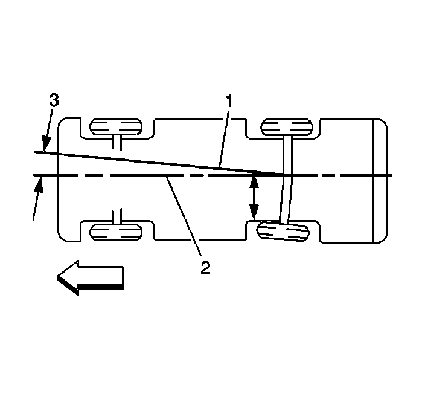

Thrust Angles Description
Thrust Angles Description
Thrust Angles Description:

The front wheels aim or steer the vehicle. The rear wheels control tracking. This tracking action relates to the thrust angle (3). The thrust angle is the path that the rear wheels take. Ideally, the thrust angle is geometrically aligned with the body centerline (2).
In the illustration, toe-in is shown on the left rear wheel, moving the thrust line (1) off center. The resulting deviation from the centerline is the thrust angle.
If the thrust angle is not set properly the vehicle may "dog track", the steering wheel may not be centered or it could be perceived as a bent axle. Thrust angle can be checked during a wheel alignment.
Positive thrust angle means the thrust line is pointing to the right hand side (RHS) of the vehicle.
Negative thrust angle means the thrust line is pointing to the left hand side (LHS) of the vehicle.
If the thrust angle is out of specification, moving the axle to body relationship will change the thrust angle reading.
If the vehicle is out in the Positive (+) direction-moving the RHS forward and/or LHS rearward will move the thrust angle towards zero degrees.
If the vehicle is out in the Negative (-) direction-moving the RHS rearward and/or LHS forward will move the thrust angle towards zero degrees.